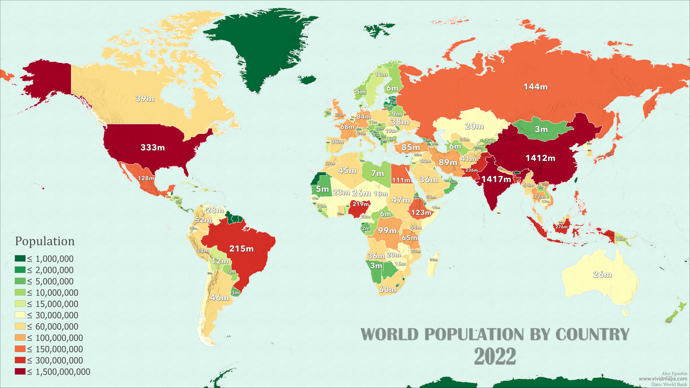
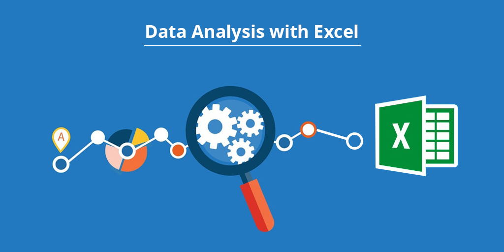

In this project, I took raw data of various countries and their population and cleaned and transformed it
in Python and then did the initial exploration to see what are the various patterns I am encountering.

In this project, I took data of the layoffs which took place in various countries around the globe during the pandemic time and cleaned it for analysis.
In this project, I took the data which I cleaned earlier and then analysed it to see patterns in the layoffs data and other things which maynot be obvious but interesting.

Here you can view a few of the various Tableau Dashboards which I have created using various types of data.
This is the project which I created as part of my Google Data Analytics Professional Certification where I used multiple dataframes and cleaned, manipulated, merged,analysed and visualized them in R.

In this project, I took a dataset in MS Excel, cleaned it, manipulated it and then created Pivot Tables and then used thpse pivot tables to create a Dashboard and used slicers for further convenience.
Here, I have added a few projects in which I scraped the data from websites like Wikipedia and Amazon using BeautifulSoup and then created .csv files for the tabular scraped data using Pandas.

In this project, I took a real world dataset of a data professionals survey around the globe and then made changes to it in Power Query and then I took it to Power BI and used various charts to create an interactive dashboard to check the data in an easily understandable form.